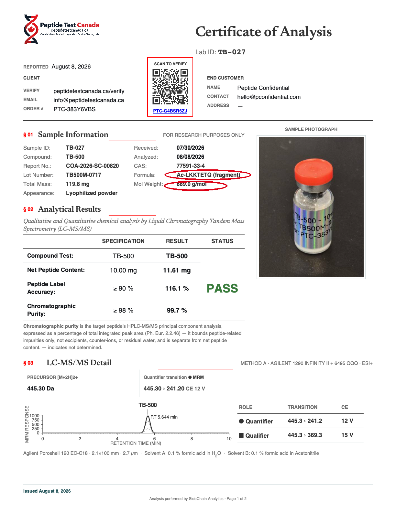

In rats, systemic administration of these peptides improves healing without injecting directly at the injury. A subcutaneous shot is systemic too, so the reasoning goes that it should work in humans. With BPC-157, Tβ4, and GHK-Cu, many report that it does.
This article argues for injecting at the injury itself, to carefully put more of the dose where it is needed, for better expected healing and less systemic spillover.
It also covers what to buy, what to look for on the Certificate of Authenticity (COA), and how to build a recovery program around other peptides, nutrition, and exercise.
Injecting 🔗
Local injection through a fine, sharp, sterile needle delivers the dose to the injury with minimal scarring. Use a thick needle to draw and a 30g or finer to inject.
Finer needles create less damage, for less scarring, fibrotic adhesion and better healing. A 33 gauge needle disrupts nearly 60% less tissue than a 30 at the same depth. Anything an inch or deeper needs a longer needle, available only in 30 gauge or coarser — a bigger hole, more scarring, fewer passes.
For tendon problems, injecting near either end (its adjoining muscle or bony attachment) reaches its blood supply but clears fast. Injecting near the tendon’s midpoint drains slowly, but can be hard to hit blind (unguided), and risks touching (and scarring) the tendon. Both should still beat a systemic subcutaneous dose.
Concentrated GHK-Cu stings. A more dilute reconstitution reduces the sting.
A closer look at human subcutaneous injection 🔗
Human subcutaneous doses leave the site to enter circulation, dispersing through the organism, with a fraction reaching the injured tissue through its blood supply.
Humans are roughly two orders of magnitude heavier than rats, with liters rather than milliliters of blood and centimeter rather than millimeter delivery paths to sparsely vascularized tendons.
Injecting SC over the injury does not change the delivery problem. Some of the dose is broken down locally, and the rest drains into capillaries and lymphatics and goes systemic, reaching the injury only as a small circulating fraction. If the injectate is below the SC fat, some might reach the deep fascia and the muscle just beneath it.
Local injection starts in the target tissue, before systemic dilution. How much that advantage matters depends on the peptide.
BPC-157 🔗
How it works
IP BPC-157 works in rats. [Staresinic, 2003] found accelerated healing of transected Achilles tendon, and [Krivic, 2006] found improved tendon-to-bone healing, both by intraperitoneal administration at 10 µg/kg/day.
BPC-157 upregulates two receptors in tendon fibroblasts — the growth hormone receptor (GHR) and VEGFR2, the receptor for vascular endothelial growth factor (VEGF) [Hsieh, 2017]. This makes the tissue more responsive to its own repair signals.
GHR activation drives collagen production, and VEGF drives the new vessels that bring nutrients, growth factors, and macrophages and carry waste away. If expression tracks concentration, raising concentration at the tendon raises that responsiveness there.
[Chang, 2014] found BPC-157 upregulated GHRs in isolated rat tendon fibroblasts both dose- and time-dependently, reaching about 4-fold at 24 hours. But this is in a petri dish where the dose stays put. To what degree these effects occur in vivo, either by systemic or local injection, is unknown.
Organism scale and targeting
In rats, systemic doses reach musculoskeletal injuries faster and more concentrated than in humans. Under a short half-life, delivery speed relative to elimination matters. Rat heart rate is about 300, so peak concentration is reached early, as BPC clears.
Tissue exposure depends on blood supply, tendon's is poor, and poorer still in humans, with longer, higher-resistance microvasculature. So the shortfall in thicker human tendon is probably worse.
How long is it there?
No one has measured how much systemically administered BPC-157 reaches the injury or how long it stays there. In rats and beagles, systemic bioavailability after intramuscular injection was 14–19% and 45–51%, respectively, with intravenous plasma half-lives of about 15 and 5 minutes. After intramuscular injection, intact peptide fell below detection by four hours [He, 2022].
But the cascade it sets off starts with immediate local vasodilation, gradual GH and VEGF receptor upregulation, and repair signals like IGF-1, MGF, and TGF-beta that persist for hours after the peptide clears, building microvasculature and structural remodeling.
Dose
200–250 µg, 2–4 times per day, gives 400–1000 µg/day. This wide range is based on conventional dosing, animal pharmacokinetics, GHR turnover, injury type and severity, rather than measured healing outcomes in humans.
Frequency
GHR builds while BPC-157 is present and likely peaks as the peptide clears, then declines over a couple of its own one-to-two-hour half-lives [van Kerkhof, 2002] (hamster cells in vitro, not human tendon in vivo). With clearance and decline each around two hours, the elevated window is only a few hours, so twice daily is a practical floor, not an optimum.
Blind injections can miss the target. Small injections might be effective in vitro, but decrease the odds of reaching it. More frequent injections can improve those odds and should also keep local GHRs upregulated. But injections damage and scar tissue, and larger doses increase systemic spillover, so more isn’t better.
Timing doses around regularly scheduled daily events keeps them regular. Training and a hot shower raise perfusion to the area, training adds mechanical stimulus, and training and the hours before sleep raise GH, which couples with the GHR that BPC-157 upregulates. A hot shower also leaves the skin clean.
Cancer risk
BPC-157 promotes blood vessel growth and, in tendon cells, upregulates the growth hormone receptor. Both go body-wide in the blood — the first could feed a hidden tumor's vessels, the second prime its cells for the growth hormone a secretagogue adds.
How much circulates depends on dose and route. An intramuscular (IM) dose reaches the blood only partly (14 to 19% in rats, 45 to 51% in dogs [He, 2022]). Compared to SC injection, local injection can reach the injury in sufficient concentration at smaller doses with lower systemic exposure.
GH Secretagogues 🔗
GH secretagogues like tesamorelin or GRF (1-29) benefit the upregulated GH receptors. This also raises systemic IGF-1, which increases cancer risk. These peptides act on the anterior pituitary and should not be locally injected
Thymosin beta-4 vs "TB-500" 🔗
Thymosin beta-4 (Tβ4) is a 43-amino-acid protein, but "TB-500" is just a market name — the vial may hold that full protein or only a seven-amino-acid fragment of it. Nearly all the evidence, the human trials and pharmacokinetics included, is for the full protein [McGuire, 2026]. The fragment is usually what you get, reported to help but barely studied on its own.
Neither the name nor the vendor's description tells you which you have. A certificate of analysis (COA) does, by its measured mass — about 4963 g/mol for the full protein and 889 g/mol for the fragment.
[Biçer, 2026] is the only controlled tendon study of TB-500, giving rats 60 µg/kg/day intraperitoneally for four weeks after Achilles transection and Kessler repair. TB-500 raised maximum load to failure and improved histological scores versus controls, and adding BPC-157 gave no further benefit, possibly limited by the four-week window. But the paper identifies the product only as Peptide Sciences TB-500 (27-155-PS), and that supplier sold both the full protein and the fragment, so which one was tested is unknown.
Tβ4 systemic vs local and mechanism of action
Tβ4 binds G-actin. G-actin is the soluble form of actin that cells assemble into filaments to change shape and move. Tβ4's binding of G-actin promotes migration of repair and endothelial cells through injured tissue.
Full-length Tβ4 can release Ac-SDKP, a small anti-fibrotic peptide, but only where the enzyme meprin-α makes the first cut — mainly kidney and gut, not tendon, ligament, or muscle [Kumar, 2016]. A local injection into these tissues produces none at the injury, and the anti-fibrotic effect reported for Ac-SDKP in organs like the kidney and lung [Conte, 2016] does not carry over to a musculoskeletal site.
Local administration works. [Xu, 2013] found that 1 µg of Tβ4 in fibrin, placed into a transected rat medial collateral ligament, improved collagen organization and biomechanics compared with fibrin alone.
[Malinda, 1999] compared topical and intraperitoneal Tβ4 in a full-thickness rat skin-wound model, measuring local versus systemic administration. Five µg applied locally just twice produced at least the same healing effect, with increased collagen deposition and angiogenesis, as 60 µg injected intraperitoneally every other day for seven days, despite using only about 4% as much Tβ4 cumulatively, with significant effects evident by day 4.

That topical delivery matched or beat the far larger systemic dose casts doubt on any injury-homing mechanism from systemic administration.
The risk
Thymosin beta-4 promotes cell migration, angiogenesis, and anti-apoptotic signaling, all of which can also support tumor growth and metastasis. Local injection offers a more precise approach to get more of it to the target tissue at a more conservative dose, with less systemic exposure.
GHK-Cu 🔗
GHK-Cu binds to proteins. With systemic administration, it can bind to albumin and other things, before reaching the target. This is in addition to dilution and circulatory challenges to reach the target.
GHK-Cu delivers copper, which collagen needs for cross-linking. Copper is the cofactor for lysyl oxidase, the enzyme that cross-links collagen and elastin into load-bearing fibrils.
GHK-Cu's pro-collagen effects have been shown in skin and wounds, with separate orthopedic evidence of improved ligament-graft mechanics. Its mechanisms promote angiogenesis and suppresses inflammatory signaling, all relevant to healing muscle, fascia, and tendon in humans [Pickart & Margolina, 2018]. The effects scale with concentration, which favors local delivery.
GHK-Cu injected into rat wound chambers increased collagen, total protein, DNA, and glycosaminoglycans in a concentration-dependent manner [Maquart, 1993].
An orthopedic study on rats found intra-articular GHK-Cu improved early graft stiffness and knee laxity after ACL reconstruction [Fu, 2015].
In mice, systemic GHK-Cu preserved muscle mass, increased fiber cross-sectional area, and improved grip strength [Deng, 2023].
Dose
The GHK-Cu dose is about 0.5–1 mg a day, the range [Maquart, 1993] found effective, given daily after [Canapp, 2003]. It’s about 16% copper by mass, so 1 mg carries roughly 160 µg of copper, under a fifth of the recommended dietary intake. The ceiling sits far higher — mice tolerated a human-equivalent near 130 mg with no treatment-related toxicity [Zhang, 2022], over a hundred times this.
Checking the COA 🔗
Products sold for research use are not made for human injection, and some have been reported as contaminated — an independent test of ten vials, BPC-157 and GHK-Cu among them, found several with low purity, endotoxin, and heavy metals. Ask for a certificate of analysis covering identity, purity, and endotoxin before buying.
The Certificate of Analysis (COA) tells you what you have, and two lines matter most. One is mass — "TB-500" is sold both as full-length Tβ4 and the shorter fragment, and only the mass tells them apart. The other is residual trifluoroacetic acid (TFA), which the COA should report as a low, quantified number.
COAs must be from verified third-party facilities (Janoshik, Vanguard, Freedom Diagnostics, etc.), and signed with a verifiable Task/Report ID. Vendor-generated PDFs and website claims are insufficient.



Residual TFA
TFA is highly corrosive, reducing peptide stability and damaging tissue it comes in contact with. Do not inject it. Source the lowest TFA available (USP-grade runs under 0.5%). Most suppliers already list net peptide content, but few report residual TFA, so it is the one to insist on.

Dosing and local injection protocol summary 🔗
These doses describe reported practice, not recommendations. No human trials establish them.
A blend puts all three peptides in one preparation, drawn and injected together. BPC-157 and TB-500 both clear within hours, so the daily dose is split across two to four injections rather than given at once — the schedule BPC-157 needs anyway. The one cost is that the copper is stored in the vial with the other two peptides for the weeks it is in use.
The blend holds 25 mg GHK-Cu, 20 mg BPC-157, and 5 mg TB-500 — a 5:4:1 ratio — in 20 mL of bacteriostatic water (sold research-use, e.g., BAC Water Depot, not an affiliate link). GHK-Cu comes in 50 mg vials and TB-500 in 10 mg vials, so the blend uses half of each, and the rest is kept for the next batch. Because a vial holds only 10 mL, the blend is split across two of them.
Making the blend
What I used
- A 50 mg vial of GHK-Cu
- Two 10 mg vials of BPC-157
- A 10 mg vial of TB-500
- About 22 mL of bacteriostatic water
- Two empty 10 mL vials
- A 3 mL syringe for mixing
How I made it
- Reconstitute each peptide vial in 2 mL of water, swirling to dissolve (about a minute).
- Draw 1 mL of GHK-Cu (25 mg) into an empty vial.
- Add all 20 mg of BPC-157 to it.
- Draw 1 mL of TB-500 (5 mg) into it.
- Split the ~6 mL between the two vials.
- Rinse each emptied BPC-157 vial into one of the blend vials with a little water.
- Top each to 10 mL with water.
Each vial holds 12.5 mg GHK-Cu, 10 mg BPC-157, and 2.5 mg TB-500 — the 5:4:1 blend at 1.25, 1.0, and 0.25 mg/mL. Refrigerate both, along with the leftover GHK-Cu and TB-500 for the next batch, and finish one before opening the second.
The dose
| GHK-Cu | BPC-157 | TB-500 | |
|---|---|---|---|
| In the blend (20 mL) | 25 mg | 20 mg | 5 mg |
| Concentration | 1.25 mg/mL | 1.0 mg/mL | 0.25 mg/mL |
| Per day | 1.0 mg | 0.80 mg | 0.20 mg |
| Daily draw | 80 IU (0.80 mL), split into 2–4 injections of 20–40 IU | ||
| Basis | Rat wound studies [Maquart], [Canapp] | GHR turnover + fast clearance | Guess — no fragment dose data |
Each injection is 20 to 40 IU, large enough that a one-unit slip on the syringe is only a few percent. The two 10 mL vials last about 25 days together, roughly twelve each.

Why not GLOW?
GLOW typically blends 50 mg GHK-Cu, 10 mg BPC-157, and 10 mg TB-500, using the shorter TB-500 fragment. The fixed ratio is way off — BPC-157 at 25% and TB-500 at 200%.
Peptides are signals, not substrates 🔗
These peptides provide repair signals. GHK-Cu also supplies copper, an essential cofactor for lysyl oxidase and collagen cross-linking. Repair also requires the substrates and cofactors needed to build connective tissue, including amino acids found in collagen peptides and vitamin C. Hyaluronic acid contributes to the extracellular matrix and repair process.
For connective-tissue repair, 15 g of gelatin or collagen peptides with about 50 mg of vitamin C 30–60 minutes before exercise and loading supplies collagen-specific amino acids when synthesis is being stimulated [Shaw, 2017]. Oral hyaluronic acid at about 100–200 mg/day can support connective-tissue hydration and viscoelasticity during repair [Oliva, 2021].
What local delivery does and does not establish 🔗
To date, the human dose-response curve for BPC administration is unmeasured, and no study has measured local versus systemic tissue exposure in musculoskeletal injury. Site injection puts more of each dose at the injury and less everywhere else.
References
[He, 2022] Pharmacokinetics, distribution, metabolism, and excretion of body-protective compound 157, a potential drug for treating various wounds, in rats and dogs, He L, Feng D, Guo H, et al. Frontiers in Pharmacology 2022;13:1026182.
[Staresinic, 2003] Gastric pentadecapeptide BPC 157 accelerates healing of transected rat Achilles tendon and in vitro stimulates tendocytes growth, Staresinic M, Sebecic B, Patrlj L, et al. Journal of Orthopaedic Research 2003;21:976-83. (Abstract)
[Krivic, 2006] Achilles detachment in rat and stable gastric pentadecapeptide BPC 157, Krivic A, Anic T, Seiwerth S, Huljev D, Sikiric P. Journal of Orthopaedic Research 2006;24:982-9. (Abstract) Full-text PDF (public copy).
[Chang, 2014] Pentadecapeptide BPC 157 enhances the growth hormone receptor expression in tendon fibroblasts, Chang CH, Tsai WC, Hsu YH, Pang JS. Molecules 2014;19(11):19066-77. (Full text)
[Hsieh, 2017] Therapeutic potential of pro-angiogenic BPC157 is associated with VEGFR2 activation and up-regulation, Hsieh MJ, Liu HT, Wang CN, et al. Journal of Molecular Medicine 2017;95(3):323-33. (Abstract)
[van Kerkhof, 2002] The ubiquitin-proteasome pathway regulates the availability of the GH receptor, van Kerkhof P, Smeets M, Strous GJ. Endocrinology 2002;143(4):1243-52. (Abstract)
[McGuire, 2026] Thymosin beta-4 and TB-500 in tissue healing, regeneration, and musculoskeletal repair: a scoping review, McGuire F, Hughes E, Maak T, Cushman DM. Applied Sciences 2026;16(12):6202. (Open access)
[Biçer, 2026] Effects of BPC-157 and TB-500 on Achilles tendon healing in rats: A histopathological and biomechanical study, Biçer O, Adanir O, Güleryüz Y, et al. Joint Diseases and Related Surgery 2026;37(3):822-37.
[Xu, 2013] Thymosin beta4 enhances the healing of medial collateral ligament injury in rat, Xu B, Yang M, Li Z, et al. Regulatory Peptides 2013;184:1-5.
[Malinda, 1999] Thymosin beta4 accelerates wound healing, Malinda KM, Sidhu GS, Mani H, et al. Journal of Investigative Dermatology 1999;113:364-8. (Abstract; publisher full-text link)
[Kumar, 2016] The anti-inflammatory peptide Ac-SDKP is released from thymosin-β4 by renal meprin-α and prolyl oligopeptidase, Kumar N, Nakagawa P, Janic B, et al. American Journal of Physiology-Renal Physiology 2016;310(10):F1026-F1034. (Full text)
[Conte, 2016] Preventive and therapeutic effects of thymosin β4 N-terminal fragment Ac-SDKP in the bleomycin model of pulmonary fibrosis, Conte E, Fagone E, Gili E, et al. Oncotarget 2016;7(23):33841-33854. (Full text)
[Maquart, 1993] In vivo stimulation of connective tissue accumulation by the tripeptide-copper complex glycyl-L-histidyl-L-lysine-Cu2+ in rat experimental wounds, Maquart FX, Bellon G, Chaqour B, et al. Journal of Clinical Investigation 1993;92(5):2368-76.
[Fu, 2015] Tripeptide-copper complex GHK-Cu (II) transiently improved healing outcome in a rat model of ACL reconstruction, Fu SC, Cheuk YC, Chiu WYV, et al. Journal of Orthopaedic Research 2015;33(7):1024-33. (Abstract) Full-text PDF (public copy).
[Deng, 2023] Glycyl-L-histidyl-L-lysine-Cu²⁺ rescues cigarette smoking-induced skeletal muscle dysfunction via a sirtuin 1-dependent pathway, Deng M, Zhang Q, Yan L, et al. Journal of Cachexia, Sarcopenia and Muscle 2023;14(3):1365-1380. (Full text)
[Canapp, 2003] The effect of topical tripeptide-copper complex on healing of ischemic open wounds, Canapp SO, et al. Veterinary Surgery 2003;32(6):515-523. (Abstract)
[Zhang, 2022] Glycyl-L-histidyl-L-lysine-Cu²⁺ attenuates cigarette smoke-induced pulmonary emphysema and inflammation by reducing oxidative stress pathway, Zhang Q, Yan L, Lu J, Zhou X. Frontiers in Molecular Biosciences 2022;9:925700. (Full text)
[Pickart & Margolina, 2018] Regenerative and protective actions of the GHK-Cu peptide in the light of the new gene data, Pickart L, Margolina A. International Journal of Molecular Sciences 2018;19(7):1987.
[Shaw, 2017] Vitamin C-enriched gelatin supplementation before intermittent activity augments collagen synthesis, Shaw G, Lee-Barthel A, Ross MLR, et al. American Journal of Clinical Nutrition 2017;105(1):136-143. (Full text)
[Oliva, 2021] The impact of hyaluronic acid on tendon physiology and its clinical application in tendinopathies, Oliva F, Marsilio E, Asparago G, et al. Cells 2021;10(11):3081. (Full text)